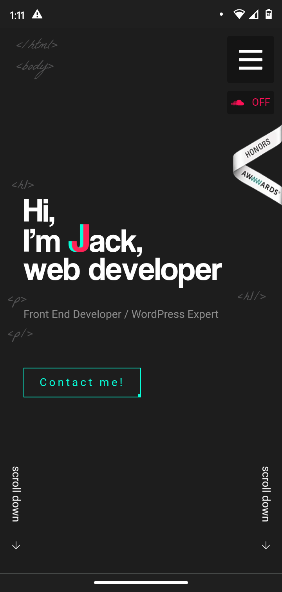
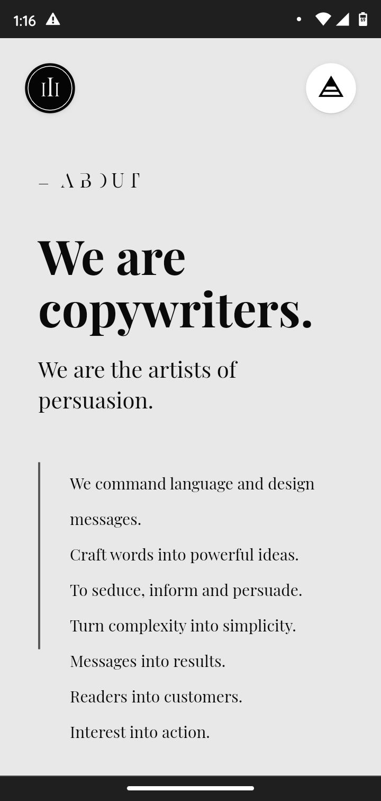

Principles of Design: Proximity
I chose this site because I think it demonstrate well placed and ordered items. It feels like there is just enough space for the design to work and not feel overly clustered.
Principles of Design: Alignment
I chose this site because of the alignment he chose here. He aligned his title for the page one the left along with the html tag doodles in the background. Then he placed his navigation button on the right side of the page along with an option to turn sound on. Pretty creative and visually appealing. This site is actually pretty cool, the mobile experience is great but I like the desktop experience even more.
Principles of Design: Repetition
How does this site demonstrate good repetition? The image you see here is the first of several sections that are layed out just like this. Each section changes the background color from the previous. Here the developer succesfully relays the information they want you to know but does it in a visually catching way. Each section is different but similar to the last keeping your attention but also creating a connection with the other information in the list. Super cool!